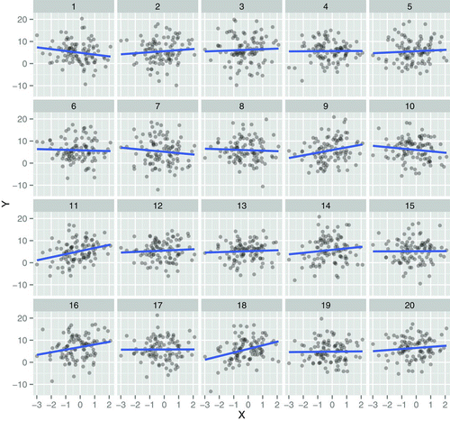
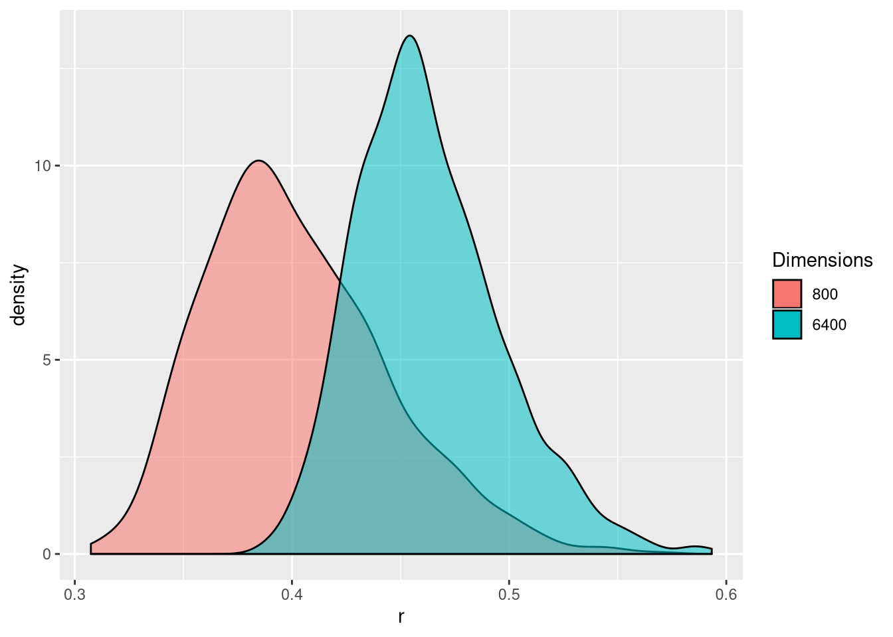
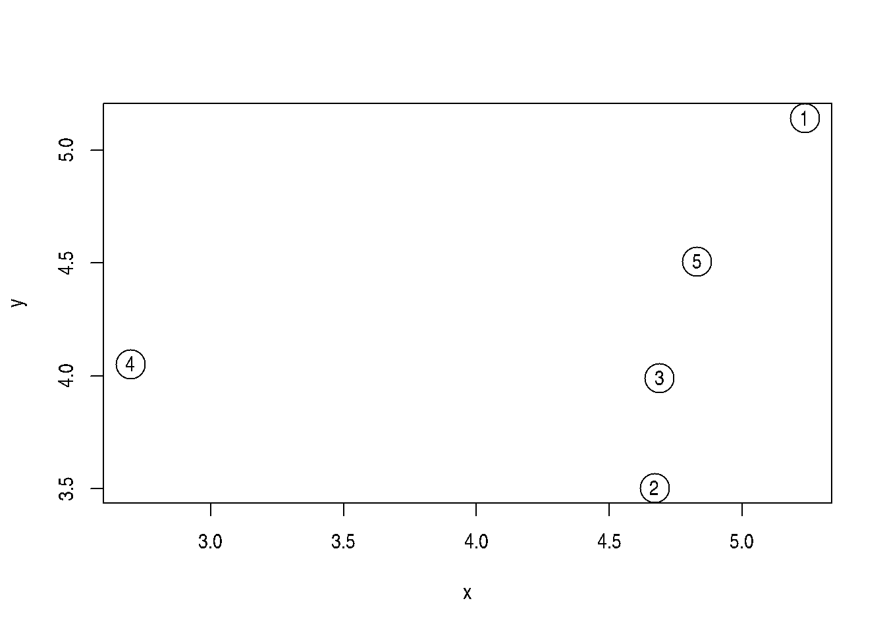
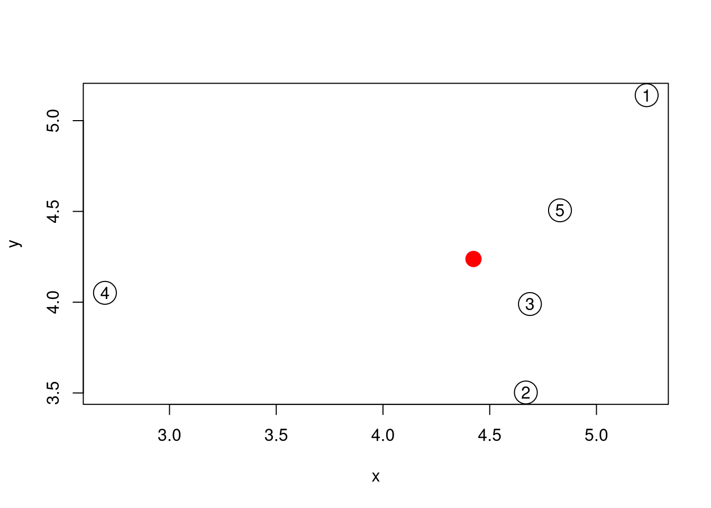
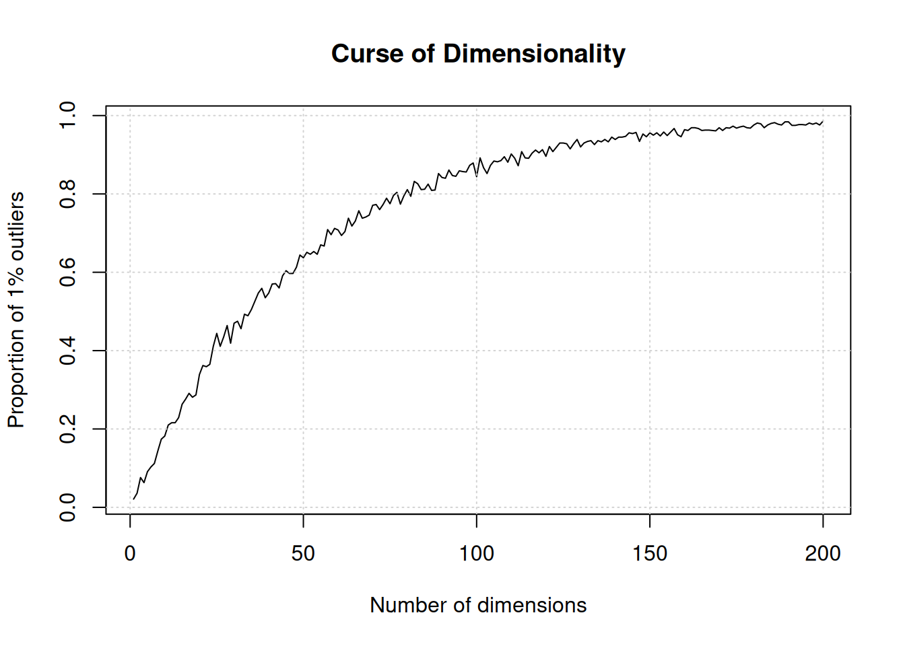
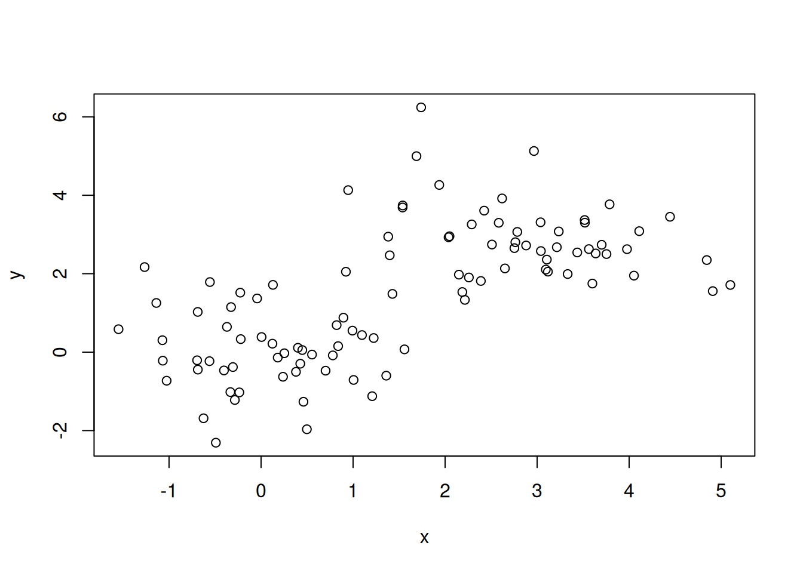
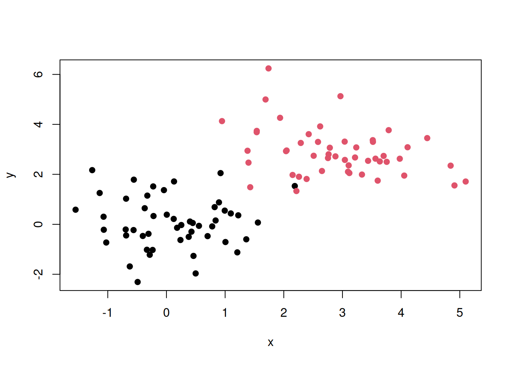
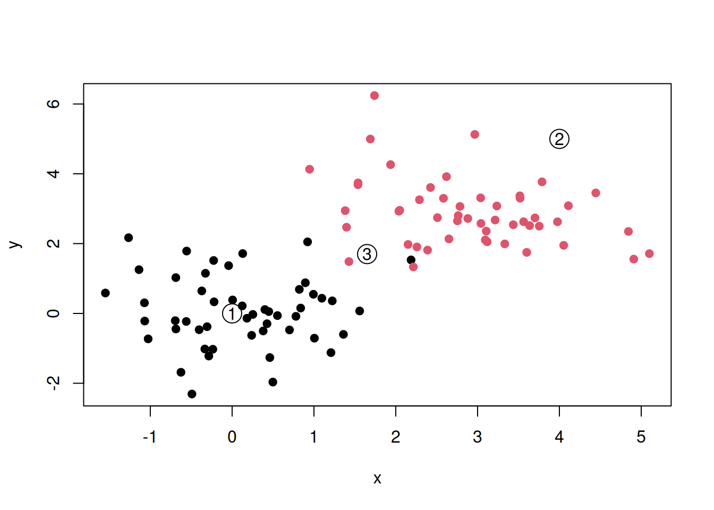

The next chapters will focus on concepts from statistical (hypothesis testing in chapter 7) and general machine learning (chapters 8, 9 and 10). Before diving into the technical details, it is useful to learn (or remind ourselves) why these techniques are so incredibly important when analysing (i.e. looking to understand) high throughput biomedical data. The goals of these chapters is to
Let’s start with the following experiment. Researchers are interested in the expression of three genes, A1CF, BRCA1 and TP53 in the absence and presence of a certain drug in a model cell line. The expression of these genes is measured four times.
Figure 6.1: Distributions of the expression of the genes A1CF, BRCA1 and TP53 under the control (no drug) and drug at concentrations 1 and 5.
► Question
Make sure you understand the visualisation above.
What genes would you call differentially expressed, i.e. that show different expressions between any condition.
What criteria do you rely on to conclude whether the genes are or aren’t differentially expressed?
Now imagine if instead of having 3 genes, we had 20000!
► Question
Formalise the experiemental design, i.e. all the variables that define what the experiment measures using a table.
► Solution
Statistical hypothesis testing (chapter 7) will help us formalise when to call genes differentially expressed.
There are many more types of patterns that we wold be interested in identifying in omics data. Let’s reconsider the linear regression model from section 3.3. Below is a figure from Majumder, Hofmann, and Cook (2013Majumder, Mahbubul, Heike Hofmann, and Dianne Cook. 2013. “Validation of Visual Statistical Inference, Applied to Linear Models.” Journal of the American Statistical Association 108 (503): 942–56. https://doi.org/10.1080/01621459.2013.808157.). Among the 20 scatter plots below, one represents the actual data, and 19 are simulations that are based on the real data.
Figure 6.2: One of these plots is the plot of the actual data, and the remaining are null plots, produced by simulating data from a null model that assumes no effect (\(H_{0}\) is true).
► Question
Which plot is the most different from the others, in the sense that there is the steepest slope?
Do you think this is the real data? If it is not, what would you conclude as to whether the trend in the real data is relevant or not?
► Question
Imagine that instead of 20 correlations, we have thousands thereof! How would you address that challenge?
► Question
An additionnal complication with large data is the appearance of spurious positive results, called false positives. In the example below, we calculate Pearon correlation coefficients between two vectors \(x\) and \(y\):
\[r_{xy} = \frac{\sum_{i = 1}^{n}(x_{i} - \bar x)(y_{i} - \bar y)}{\sqrt{\sum_{i = 1}^{n}(x_{i} - \bar x)^{2}} \sqrt{\sum_{i = 1}^{n}(y_{i} - \bar y)^{2}}}\]
where \(n\) is the length of the vector, \(x_{i}\) and \(y_{i}\) are the \(i_{th}\) elements of the \(x\) and y$ vectors, \(\bar x\) and \(\bar y\) are the respective means.
A correlation coefficient ranges between -1 (for anti-correlated vectors) to 1 (for perfectly correlated vectors). Non-correlated data have a correlation coefficient close to 0.
Figure 6.3: Example of correlation, anti-correlation and lack thereof.
► Question
Generate two random vectors x and y of length 60 using
rnorm. Plot them, add a linear regression line, find the slope of
the regression line, and calculate their correlation coefficient using
the cor function.
► Solution
Let’s expand the code above and calculate the correlation coefficient between hundreds of random vectors and choose the best one (in abolute terms) among those. Let’s repeat this procedure 1000 times to obtain 1000 best correlations (based on Fan, Han, and Liu (2014Fan, Jianqing, Fang Han, and Han Liu. 2014. “Challenges of Big Data analysis.” National Science Review 1 (2): 293–314. https://doi.org/10.1093/nsr/nwt032.)). The figure below shows the distribution of these 1000 best correlations when comparing 800 or 6400 vectors. We see that with more (random) data, we increase that the risk of obtaining spurious correlations.
Figure 6.4: Illustration of spurious correlation. Distribution of the maximum absolute sample correlation coefficients between a vector of length and 800 of 6400 others. Based on 1000 repetitions.
► Question
Calculate 100 correlation coefficients for pairs of random vectors or length 10. What are the mean, maximum and minumum of your simulated coefficients? Out of those 100 coefficients, how many would you consider of interest if you didn’t know they were produced by random data?
► Solution
We are often interested in identifying outliers, i.e. points that are different from the others. One way to define different is by measuring distances between all the samples, or each sample to a virtual average sample. Let’s try this ourselves for a dataset of 5 sample that have each been characterised by measuring the expression of genes\(x\) and \(y\).
set.seed(111)
samples <- data.frame(x = rnorm(5, 5, 1),
y = rnorm(5, 5, 1))
plot(samples, cex = 3)
text(samples$x, samples$y, 1:5)Figure 6.5: A simulated dataset composed of 5 samples.
Visually, we could consider sample 4 to be an outlier. Let’s start by
calculating all pairwise Euclidean
distances with the
dist.
## 1 2 3 4
## 2 1.7327389
## 3 1.2738181 0.4876129
## 4 2.7612729 2.0466051 1.9916782
## 5 0.7531106 1.0161181 0.5350696 2.1793910► Question
dist function?
► Question
An alternative approach would be to calculate the distance of each sample to an average samples, represented by a red point on the figure below.
Figure 6.6: The average sample is shown as a red point among the 5 samples simulated above.

► Solution
The concept out outlier is very intuitive, but becomes murky when the number of dimensions becomes very high.
There is one very well documented feature of high dimension data, known as the curse of dimensionality. When the numbers of dimensions increase, data become increasingly sparse, the definition of distance or density becomes difficult to define and more and more points become outliers.
Below, we demonstrate how the number of outliers increases with the number of dimenstion (source):
The simulation generates N points in hypercubes of d dimensions and counts how many of those points are outliers, defined as being in the 1% outer shell of the space. In 1 dimension, we have 1% of the uniformely distributed points that are outliers. In 50 dimension, there are already 60% of the points that are outliers; in 100 dimensions, almost 90% of the points are outliers.
d <- 1:200
N <- 1000
dat <- lapply(d, function(i) replicate(i, runif(N)))
nout <- function(m) mean(apply(m, 1, function(i) any(i < 0.01 | i > 0.99)))
res <- sapply(dat, nout)
plot(res, type = "l",
xlab = "Number of dimensions",
ylab = "Proportion of 1% outliers",
main = "Curse of Dimensionality")
grid()
The dataset below is composed of 100 data points (samples). For each data point, we have measured values x and y (two genes). We have a dataset of 100 points in 2 dimensions.
Figure 6.7: A dataset of 100 unlabelled points measured along two dimensions.
► Question
Now imagine that we know about number of group (which would be called classes in this setting) and the label of each point. In the figure below, we have two classes, red and black, and we know exactly which points below to the red class and the black class.
Figure 6.8: A dataset of 100 labelled points measured along two dimensions.
We now obtain data for three new points (samples), annotated as 1, 2, and 3 below.
Figure 6.9: A dataset of 100 labelled and three new, unlalled, points.
► Question
To what class (red or black) should points 1, 2, and 3 be assigned to?
The examples presented above fall squarely into the discipline of machine learning. The first example is a case of unsupervised learning. In unsupervised learning we aim at find patterns in a dataset without the help of any additional information or labels. Typical applications of unsupervised learning is clustering (as in our first example and chapter 8) or dimensionality reduction (chapter 9)
In our second example, we were given labels for each observation. This is an example of supervised learning, that aims at learning inputs and mapping them to certain target outputs with the help of known labels. Example of supervised learning are classification as in the example above (see chapter 10) and regression, where the target isn’t a category, but a value.
There are additional types of machine learning, such as semi-supervised learning (combining the two approaches above), self-supervised learning (supervised without any labels, i.e. where they need to be identified automatically), reinforcement learning (automatic tuning of the learning when new information is received), but these are beyond the scope of this course.
Page built: 2019-10-21